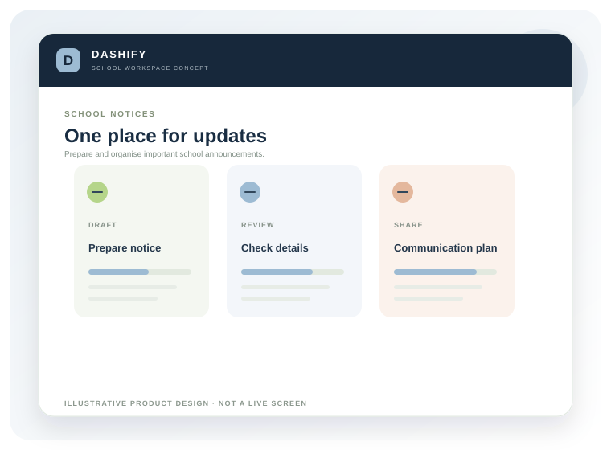

Straight answers about
where things stand.
DASHIFY is in development. These answers explain the current product direction and what schools should expect at this stage.

Illustrative product concept · DASHIFY by BRIZNOVAWhat schools
often ask.
If your question is not covered here, contact the team. We will distinguish what is confirmed from what is still being evaluated.
Is DASHIFY available to use today?+
No. DASHIFY is in development. This website describes product direction and proposed scope. It is not an announcement that a production system or all listed modules are available.
What type of schools is it designed for?+
Initial research is focused on private schools, particularly those seeking a more organised approach to student records, attendance, fee administration and notices. The target profile will be refined through discovery.
Which features are included in the first pilot?+
Proposed priorities are school setup, student records, daily attendance, fee administration and notices. Actual scope depends on product readiness and must be agreed in writing.
Does DASHIFY have a parent or student app?+
Parent and student self-service is a possible later phase. It should not be assumed to be available or included in an initial pilot.
Can the school collect online fees through DASHIFY?+
Online payment gateway support has not been confirmed. Any payment integration requires technical validation, an approved provider, security review and a separate written scope.
Does DASHIFY send SMS or WhatsApp messages?+
Messaging integrations have not been confirmed. Delivery channels, provider accounts, consent requirements and costs would need assessment.
Can we import our existing student data?+
Data migration should be assessed after scope and safeguards are agreed. Early demonstrations should use synthetic data. Do not send identifiable student records through an ordinary enquiry form.
How much does DASHIFY cost?+
Public pricing has not been set because product and pilot scope are still being validated. Any proposal will specify modules, setup, support, integrations and commercial terms.
How long does implementation take?+
No fixed duration is promised. Timing depends on scope, school readiness, data preparation, integrations and staff availability.
Where is school data hosted?+
Hosting and deployment arrangements are being evaluated. Hosting location, backups and data-processing terms must be confirmed before live data is onboarded.
Is DASHIFY affiliated with a government body?+
No government affiliation or endorsement is claimed. DASHIFY is a product initiative from BRIZNOVA.
How can our school participate?+
Use the contact page to express interest. A conversation will help assess workflows and whether discovery or a pilot discussion is appropriate.
Still have a question?
Tell us what you need to know and we will respond with the information available at this stage.